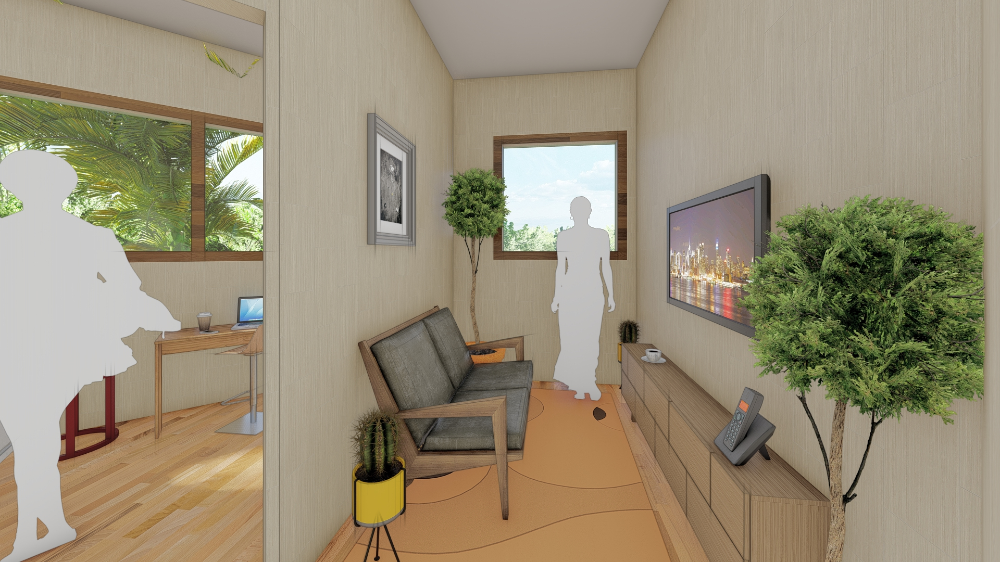

context
group housing project
ormoc, leyte
skills
SketchUp
ArchiCAD
Lumion 8
Adobe Photoshop
Vray
date
2019
about the project
Shareco housing project is proposal design for the city of Ormoc found in the coastal city of
Leyte in the Northwest (Visayas). The specific area for the project is the Can-Adieng neighborhood
where 598 households are found (2,405 in population). The area is found to be flood-prone as it is situated near the Malbasag River. The neighborhood is also located in the urban center which is also the major node development of the city.
➜aerial perspective
design problem
Due to the rising population in a relatively small neighborhood, the density of the area has greatly increased as observed throughout the years. In addition to this, most residents are unemployed which
affects the economic state of the city. Another problem the city currently faces is the flooding during heavy rains and typhoons.
design strategy
To address the mentioned problems together with the proposal of the housing project, the design strategy for this project is to implement 3 main spaces in the project:
Community spaces will be general spaces that can be shared between different households (kitchen, dining, laundry, etc.). This is for the purpose of saving space and less rent and maintenance cost.
Green spaces will serve as recreational spaces for the users and also buffer spaces where flood prevention techniques and technology can be used.
Livelihood spaces are where some users can start their own small businesses which can also cater to the same community they live in.
The massing development will prioritize the shared spaces while the other spaces will be implemented outside of the housing facility.
➜massing diagrams
The general shape of one module is of octagonal mass to create emphasis on the middle area where the shared spaces will normally be. The sides will be utilized in different sizes and number of units according to the
size of a household.
 Modules will be connected by public staircases for all users to access. These staircases are found at the end of two corridors from the shared spaces.
Modules will be connected by public staircases for all users to access. These staircases are found at the end of two corridors from the shared spaces.
➜general floor plan
Families can choose the size of their unit depending on their size. The smallest unit is 14 sq. meters, while the next is 24 sq. meters, and the largest in size is at 40 sq. meters. The shared space in the center
contains the kitchen and large dining area.
One floor per module houses the shared laundry area where users can wash and dry their clothes.
final images
➜shared kitchen / dining area
Sharing the dining and kitchen area also means users can meet different families and share storage in this area.

➜bedroom / living area
Because the dining area and kitchen are situated across the hall, users can enjoy their private spaces such as bedrooms, living areas, lounges, etc., more freely and with better space.
➜laundry area
Laundry areas are found in each housing module and is also considered a shared space like the kitchen and dining area.
➜green spaces
Green spaces will serve as buffer spaces during flood as well as recreational spaces for the community.
➜livelihood spaces
Users can set-up stalls to start their own businesses which can cater to their own community. Designated parking spaces are also found in the neighborhood as foot traffic is recommended.